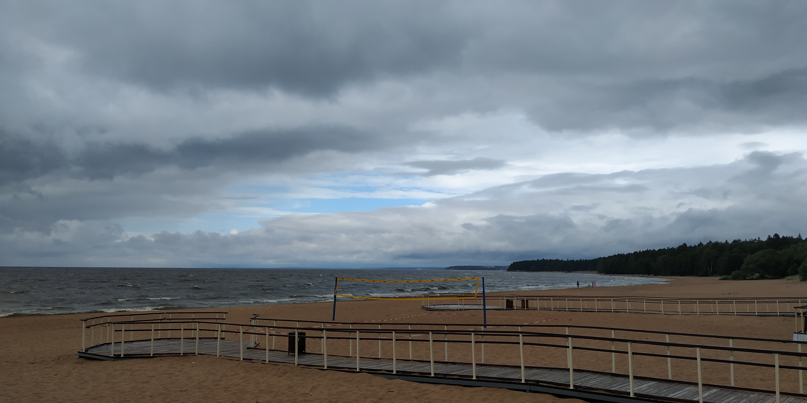
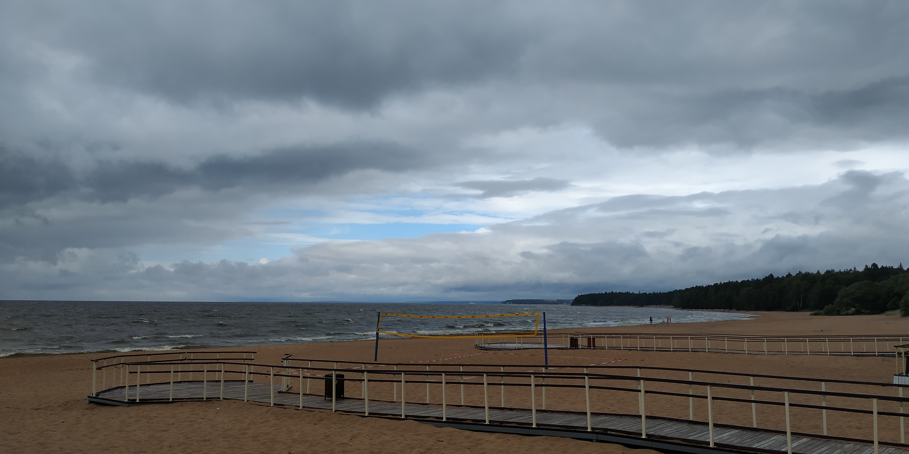

Спот расположен в районе пляжа "Ласковый" в поселке "Солнечное".
Находится на благоустроенном пляже. Имееются туалеты (бесплатные и платные), гриль-зоны, кабинки для переодевания, кафе и рестораны.
Есть канал, который неплохо работает при больших волнах.
-
Тип:Beach break
-
Направление волны:Левая и Правая
-
Дно:Песок
-
Сложность:Начинающий
-
Уровень загруженности:Высокий
-
Угрозы:Нет
-
Качество волн:Среднее
 

- 305 - маршрутка от м. Старая Деревня
- 211 - автобус от м. Беговая, м. Черная речка
- 400 - маршрутка от м. Финляндский вокзал
- 680 - маршрутка от м. Проспект Просвещения
- 827 - маршрутка от м. Гражданский проспект
Если ехать на автомобиле, то важно помнить про парковку.
Парковка. В жаркие дни, особенно в выходные, парковка практически полностью забита уже к 11-12 часам. Время от времени, места все-таки могут появляться. Поэтому, спокойно останавливаемся на паркинге там, где можно приткнуться (обычно, такие места есть) и ждем когда кто-то уедет. Примерно с 13:00 люди понемногу начинают разъезжаться (кому-то жарко, у кого-то дети, а кто-то просто уже накупался и назагорался). Примерно с 16:00 становится чуть свободнее и можно находить места без ожидания.
У опытных серферов, обычно, нет проблем с катанием, техникой безопасности и соблюдением этикета на споте. Проблемы, чаще всего, бывают у новичков и продолжающих. Они, зачастую, становятся источником опасности для катающихся, мешают брать волны. И - самое главное - есть риск столкновения, травм, поломки досок.
Если вы новичок, плохо знакомы со спотом или только тренируетесь на пене, соблюдайте следующие простые правила:
- Старайтесь приезжать пораньше, когда спот более-менее пуст. Особенно утром, в обед
- Если людей у Берёзок много, то идите дальше по пляжу в сторону волейбольных Сеток и далее. Там точно такие же волны и можно тренироваться в спокойствии. Если не знаете, что такое Берёзки, тем более следуйте этим рекомендациям
- Если сильный прибой и нужно пользоваться каналом, то заходите в канал напротив второй от инвалидки круглой мусорной урны. Заплывайте прямо в море как можно дальше, выше всех и там течение быстро снесет вас к шикарным и спокойным Сеткам.
- Самое главное правило - когда стартуешь, обязательно смотри вправо и влево. Если в вашу сторону уже едет другой серфер, значит эта волна занята, стартовать не нужно
- Второе главное правило - не сидеть внизу (близко к берегу) "под" теми серферами которые стартуют выше и могут врезаться в вас. Уплывайте из этой зоны или следуйте правилу - уходить к Сеткам
- Если не знаете где канал, не можете самостоятельно его найти, значит вы не опытный серфер. Идите к Сеткам
- Те кто не катается на лайнапе, а тренируется пока на пене и небольших волнах - идите к Сеткам
Атлантис - большой спот и, при правильном размещении, места на нем хватит всем.